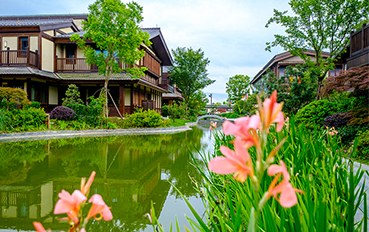
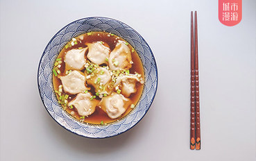

-

寒露是秋季的第五个节气，标志深秋来临，那么清霜映秋的美景不要辜负哦〜 [详情]
标签：
赏花 莫干山 登高 寒露 镇江 -
不同于川菜因为过于刺激而难登大雅之堂，粤菜一向是高端宴席的宠儿。 而与此同时，在广东，也总有一些街头小馆，向食客们供应着地道美味。 有的甚至没有招牌，还动辄就排队，可见美食之魅力。 [详情]
标签：
广州 美食 -
江南自古就是一个人杰地灵、风光秀美的地方。而江南的秋色， 更是一部色彩斑斓的大片，片中的重点，是到无锡惠山古镇赏银杏。 无锡惠山古镇，坐落于无锡的西面，旧时因为古镇处在 [详情]
标签：
无锡 惠山古镇 锡惠公园 -

门面不起眼、价格接地气，东西却真的好吃。 [详情]
标签：
上海 魔都 美食 大富贵 万寿斋 -
 不信你尽管来试! [详情]
不信你尽管来试! [详情]标签：
成都 熊猫 金沙遗址 川剧